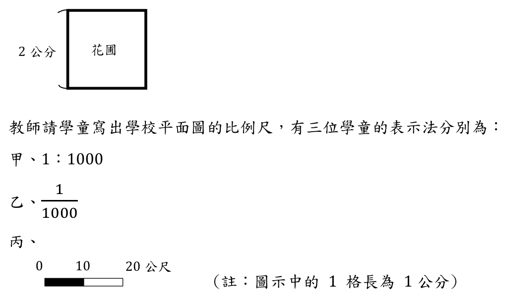
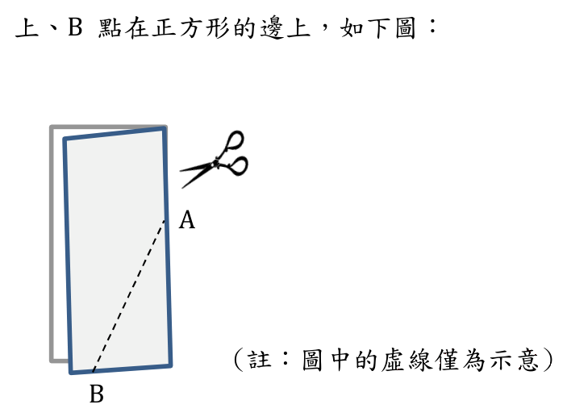
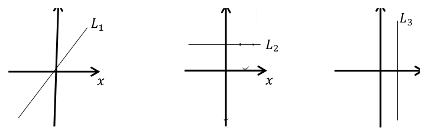
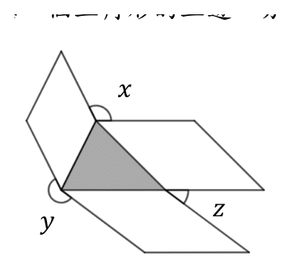
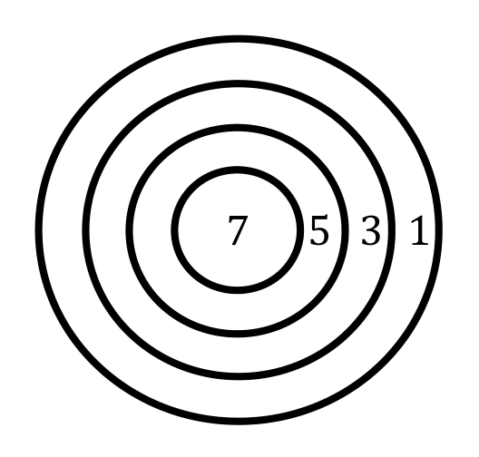
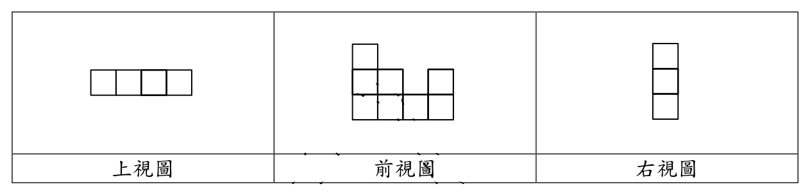
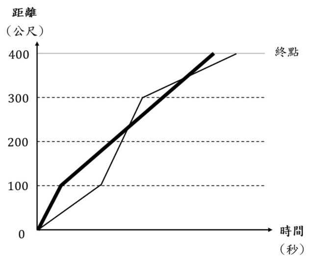

開卷有益 ／
教師檢定 ／ 國小・數學能力測驗 ／ 114 年114 年教師檢定國小・數學能力測驗試題與答案
這一頁是民國 114 年教師檢定國小・數學能力測驗的整份歷屆試題，共 26 題，題目與標準答案出自教育部教師資格考試歷屆試題（受託國立臺灣師範大學心理與教育測驗研究發展中心），其中 26 題附有詳解。以下逐題列出題幹、選項與答案；要計時作答或記錄成績，請用線上練習。
教育部原始場次代碼：tqa11430
線上作答這一科 →
全部 26 題
第 1 題
教師給每組學童三袋糖果,請各組利用天平比較這三袋糖果的重量,每組針對這三袋 糖果自行標示甲、乙、丙,以下是三組學童的比較結果: 第一組：甲比乙重、甲比丙重 第二組：甲比乙重、乙比丙重 第三組：甲比乙重、甲比丙輕 哪些組的比較結果可以確定三袋的重量順序？
（A） 只有第二組（B） 只有第二組、第三組（C） 只有第一組、第二組（D） 三組都可以答案：（B）
詳解與考點 正解：要能完全確定三袋糖果甲、乙、丙的重量順序，需要甲、乙、丙三者之間具有可傳遞、首尾相連的完整比較鏈，而非僅比較出「誰最重」而已。第二組：甲比乙重（甲>乙）、乙比丙重（乙>丙），兩式首尾相連，可推得甲>乙>丙，順序完全確定。第三組：甲比乙重（甲>乙）、甲比丙輕（即丙>甲），兩式同樣首尾相連（丙>甲、甲>乙），可推得丙>甲>乙，順序同樣完全確定。因此只有第二組、第三組的比較結果能確定三袋的重量順序，故答案為（B）。
A：（A）只有第二組，遺漏了第三組。第三組的兩個比較「甲比乙重」「甲比丙輕」雖然乍看之下涉及三個不同的比較方向，但仍能首尾相連推出丙>甲>乙的完整順序，並非只有第二組才可確定，故A不成立。
C：（C）只有第一組、第二組，誤將第一組視為可確定順序。第一組：甲比乙重（甲>乙）、甲比丙重（甲>丙），這兩式只能確定「甲是三者中最重」，但乙、丙兩者之間完全沒有任何直接或間接的比較資訊，無法判斷乙、丙誰輕誰重，順序無法完全確立，故第一組不應被列入可確定的組別，C不成立。
D：（D）三袋都可以，同樣誤判第一組可確定順序，理由與C相同，故D不成立。
本題考點：比較關係的可傳遞性（transitivity）。要從兩兩比較結果推得完整的大小順序，關鍵在於這些比較是否能像鏈條一樣首尾相連，涵蓋所有三個對象；若兩個比較結果都以同一對象為起點（如本題第一組皆以「甲」為較重方），則只能確定該對象的相對地位，其餘對象間的關係仍屬未知，無法排出完整順序。
第 2 題
六年級300人參加抽獎,各獎項數量分布如下: 〔表格請至練習頁檢視〕 抽獎順序為：小華、小明、阿強、阿力、…… 教師問：「如果小華抽到二獎，輪到小明抽獎，小明可能抽到什麼獎呢？」 下列哪一個學童的說法正確？
（A） 小明可能抽到二獎（B） 小明不可能抽到三獎（C） 小明一定不會抽到頭獎（D） 小明一定會抽到參加獎答案：（A）
詳解與考點 正解：全部獎項為頭獎1個、二獎2個、三獎3個、參加獎294個，合計1+2+3+294=300個，恰對應300位參加者，故每位參加者最終都會抽到獎項中的一種。小華先抽，抽走1個二獎，此時剩餘獎項為頭獎1個、二獎1個（2-1=1）、三獎3個、參加獎294個，合計1+1+3+294=299個，留給尚未抽獎的299人（含小明）。輪到小明抽獎時，上述四種獎項的剩餘數量皆大於0，故小明抽到頭獎、二獎、三獎、參加獎的可能性都仍然存在，其中「小明可能抽到二獎」（剩餘二獎尚有1個）為真，故選（A）。
B：（B）「小明不可能抽到三獎」與事實不符，三獎在小華抽獎後仍剩3個（小華抽的是二獎、未動用三獎名額），小明抽到三獎的機率並非0，此說法錯誤。
C：（C）「小明一定不會抽到頭獎」與事實不符，頭獎在小華抽獎後仍剩1個（小華未抽走頭獎），小明有機會抽到頭獎，只是機率較低，並非「一定不會」，此說法錯誤地把「機率低」等同於「不可能」。
D：（D）「小明一定會抽到參加獎」同樣與事實不符，雖然參加獎剩餘數量遠多於其他獎項（294個），使小明抽到參加獎的機率極高，但頭獎、二獎、三獎在小明抽獎時仍各有剩餘名額，小明仍有機會抽中其他獎項，並非「一定」抽到參加獎，此說法把「機率高」誤判為「必然」。
本題考點：機率情境中「可能」「不可能」「一定」的語意辨析與抽獎後剩餘名額的計算。解題須先依已知抽獎結果更新各獎項的剩餘數量，再判斷後續抽獎者對各獎項是否仍有正機率抽中；須特別留意「機率極低」不等於「不可能」，「機率極高」也不等於「一定」，這是機率語言教學中常見的迷思概念。
第 3 題
教師在設計「線對稱圖形繪製:給圖形的一半,讓學童畫出另一半」的教案時,下列 哪一個元素不適合出現在首次的教學活動?
（A） 在圖形中含有圓弧（B） 將圖形印在方格紙上（C） 圖形的對稱軸為鉛直（D） 圖形的對稱軸為水平答案：（A）
詳解與考點 正解：「線對稱圖形繪製」在首次教學活動中，應選擇學童容易依格線逐點對應、能順利成功操作的圖形，藉以建立正確方法與成就感。圖形中若含有圓弧（A），弧線上的點無法單純以整數格點對應描繪，需要額外運用補點、描繪曲線等更進階的技巧，對初學者而言操作難度大幅提高，容易因失敗而打擊學習信心，故不適合出現在首次教學活動中，選A。
B：將圖形印在方格紙上，方格紙提供明確的座標格線，能協助學童以數格子的方式對應描繪對稱點，是有利於初學者建立對稱概念的鷹架工具，適合首次教學活動使用。
C：對稱軸為鉛直時，學童可藉由左右數格子的方式對應描繪對稱點，操作方式直觀且容易成功，屬於適合首次教學的元素。
D：對稱軸為水平時，學童可藉由上下數格子的方式對應描繪對稱點，操作直觀，難度與鉛直對稱軸相當，亦適合首次教學活動使用。
本題考點：線對稱圖形教學的鷹架設計原則。首次教學宜採用格點可精確對應、操作成功率高的圖形元素（方格紙、水平或鉛直對稱軸），避免含有弧線等需高階描繪技巧、易導致挫折的元素，待學童熟悉基本對應技巧後，再逐步增加圖形的複雜度（如圓弧、斜對稱軸等）。
第 4 題
有關「圓柱體表面積」的教學活動,下列何者最不可能是此活動所需的先備知識?
（A） 計算圓面積（B） 計算扇形面積（C） 計算長方形面積（D） 認識圓柱體的展開圖答案：（B）
詳解與考點 正解：圓柱體表面積＝上下兩個圓的面積之和＋側面展開後的長方形面積。因此所需先備知識為：認識圓柱體的展開圖（D），理解表面由「兩個圓＋一個長方形」構成；計算圓面積（A），用於求兩個底面；計算長方形面積（C），用於求側面（長為底圓周長、寬為柱高）。扇形面積（B）的計算，用於側面展開後為扇形的立體（如圓錐），與圓柱體側面展開後為長方形的性質無關，因此最不可能是本活動所需的先備知識，選（B）。
A、C、D：三者皆為必要先備知識，判準在於各自對應圓柱體展開圖的組成部件——A（圓面積）對應上下兩底、C（長方形面積）對應側面、D（展開圖概念）則是理解整體構成的前提，三者共同支撐「圓柱體＝2圓＋1長方形」的計算架構，故均非本題所問「最不可能」的項目。
本題考點：立體圖形表面積教學的先備知識鏈結。圓柱體＝2圓＋1長方形（先備：圓面積、長方形面積、展開圖概念）；圓錐＝1圓＋1扇形（先備：圓面積、扇形面積）；解題關鍵是依展開圖組成部件，逐一比對各選項知識是否對應到該立體圖形的組成部分。
第 5 題
將一些大小一樣的正方形, 排成四個圖形如下: 甲 乙 丙 丁 教師想選用兩個圖形,協助學童了解「兩圖形的面積相同,但周長不同」的概念, 下列哪一組圖形適合?
（A） 甲、丙（B） 甲、丁（C） 乙、丙（D） 乙、丁答案：（B）
詳解與考點 正解：本題中甲、乙、丙、丁四個圖形皆由大小相同的正方形排列組成。判斷「面積相同、周長不同」的原理是：面積僅由組成該圖形的正方形總數決定，方格數相同則面積必然相同；周長則取決於圖形外部輪廓所暴露邊線的總長，即使方格數相同，若排列方式的凹凸轉折較多、外露邊較多，周長便會隨之增加。甲與丁兩個圖形所使用的正方形數量相同，因此面積相等；但兩者排列方式不同，使外部輪廓暴露的邊長總和不同，因此周長不同，恰好同時滿足「面積相同」與「周長不同」兩項條件，故選（B）甲、丁。
A：甲、丙一組並不成立。丙所使用的正方形總數與甲不同，兩者面積本身便不相等，不符合「面積相同」的前提要求。
C：乙、丙一組並不成立。乙與丙所使用的正方形數量亦不相等，面積本身不相同，同樣無法滿足「面積相同」的前提。
D：乙、丁一組並不成立。乙、丁兩圖形雖然方格數可能相等、面積相同，但兩者排列方式使外露邊的總長相近或相同，未能呈現「周長不同」的對比效果。
本題考點：圖形面積與周長的區辨。面積由組成單位（如方格）的總數決定，周長由外部輪廓暴露邊長的總和決定；兩個由等大方格拼成的圖形，方格數相同則面積相同，但排列的凹凸程度不同會使周長不同，此為判斷「同面積、異周長」圖形組合的核心依據。
第 6 題
有兩題分數問題： 甲、2個蛋糕平分給3人，每人可以分到幾分之幾個蛋糕？ 乙、2個蛋糕平分給3人，每人可以分到全部蛋糕的幾分之幾？ 下列哪一個學童的說法正確？
（A） 兩題答案都是 \(\frac{2}{3}\)（B） 兩題答案都是 \(\frac{1}{3}\)（C） 甲題答案是 \(\frac{2}{3}\) 、乙題答案是 \(\frac{1}{3}\)（D） 甲題答案是 \(\frac{1}{3}\) 、乙題答案是 \(\frac{2}{3}\)答案：（C）
詳解與考點 正解：甲題問「每人分到幾分之幾個蛋糕」，是以「1個蛋糕」為單位量。2個蛋糕平分給3人，每人分得2÷3=2/3（個），故甲題答案為2/3。乙題問「每人分到全部蛋糕的幾分之幾」，是以「全部2個蛋糕」為單位量（視全部為1個整體）。承甲題，每人實際拿到2/3個蛋糕，而全部共有2個，故每人所得占全部的比例為(2/3)÷2=2/3×1/2=1/3，乙題答案為1/3。甲為2/3、乙為1/3，故選C。
A：把兩題答案都算成2/3，即誤把乙題也當作以「1個蛋糕」為單位量計算，忽略乙題所問的是占「全部2個」的比例，漏了÷2這一步。
B：把兩題答案都算成1/3，即誤把甲題也套用「除以全部2個」的算法，把甲題原本應以「1個蛋糕」為單位量的算式多除了一次2，導致甲題答案錯誤地偏小。
D：把甲、乙兩題的答案對調（甲填1/3、乙填2/3），等於弄反了兩題各自對應的單位量——同樣2/3個蛋糕，占1個蛋糕的比例必大於占2個蛋糕全部的比例，對調後大小關係不合理。
本題考點：分數的「單位量」辨識。同一組數字（2個蛋糕、3人）因所問的單位量不同（單一個蛋糕vs.全部蛋糕視為1個整體），會得出不同的分數表示；解題關鍵在先確認題目問的「幾分之幾」是相對於哪一個整體，而非直接套用除法算式。
第 7 題
有三個時間除法的問題： 甲、烤1個蛋糕需要1小時5分鐘，連續4小時20分鐘可以烤幾個蛋糕？ 乙、電影院連續播放某影片4次，共花了4小時20分鐘，播放1次是幾小時幾分鐘？ 丙、某公司安排4小時20分鐘的面試時間，每1人面試為20分鐘，最多可以面試幾個人？ 上述何者為「包含除」的問題？
（A） 只有乙（B） 只有甲、乙（C） 只有甲、丙（D） 只有乙、丙答案：（C）
詳解與考點 正解：包含除是指已知「總量」與「每一份的量（單位量）」，求可以分成「幾份」；等分除則是已知「總量」與「份數」，求「每一份是多少」。甲題已知總時間4小時20分與烤1個蛋糕所需的單位時間1小時5分，要求可以烤出「幾個」蛋糕，屬已知總量與單位量、求份數，是包含除。丙題已知總面試時間4小時20分與每人面試的單位時間20分，要求最多可以面試「幾個人」，同樣是已知總量與單位量、求份數，也是包含除。故甲、丙皆為包含除，選（C）。
A、B、D：三者皆誤將乙題判定為包含除而納入答案組合。乙題已知總播放時間4小時20分與播放「次數」4次（份數已知），求每次播放的時間長度，是已知總量與份數、求每份的量，屬等分除而非包含除。其中A「只有乙」完全排除了甲、丙這兩題真正符合包含除定義的題目；B「只有甲、乙」雖正確納入甲，卻誤納乙且遺漏丙；D「只有乙、丙」雖正確納入丙，卻誤納乙且遺漏甲。三者皆因對「包含除／等分除」的判準掌握不精確而生誤。
本題考點：包含除（quotitive division）與等分除（partitive division）的辨析。判準在於「已知的是單位量還是份數」：已知單位量、求份數為包含除；已知份數、求單位量為等分除；作答時須逐題辨認題目所求的是「幾份」還是「每份多少」，而非僅憑數字大小或運算式外觀判斷。
第 8 題
下列哪一個情境的資料不適合使用折線圖呈現?
（A） 某日各類產品的銷售總量（B） 某種盆栽植物每週的高度（C） 某城市一個月內每日的最高氣溫（D） 某校學童一學期內每週的出席率答案：（A）
詳解與考點 正解：折線圖適合呈現具有連續性或順序性的量，隨時間或項目序列變化的趨勢，能藉線段升降清楚呈現變化走勢。選項B「盆栽植物每週的高度」、C「城市一個月內每日的最高氣溫」、D「學童一學期內每週的出席率」，都是同一觀察對象在連續時間點上的數值變化，適合以折線圖呈現趨勢。選項A「某日各類產品的銷售總量」，是同一天內、不同且彼此獨立的產品類別之間的數量比較，類別之間並無自然的時間順序或連續關係，也不是同一對象隨時間的變化，此類資料應以長條圖比較各類別高低，而非以折線圖呈現，故最不適合使用折線圖的是A。
B：盆栽植物每週的高度是同一株植物隨時間持續變化的連續數值，適合折線圖呈現生長趨勢。
C：城市一個月內每日的最高氣溫是同一地點隨日期持續變化的連續數值，適合折線圖呈現氣溫走勢。
D：學童一學期內每週的出席率是同一群體隨時間持續變化的連續數值，適合折線圖呈現出席率的變動趨勢。
本題考點：統計圖表類型的選用原則。折線圖適用於呈現同一對象或群體隨時間（或其他連續序列）變化的趨勢；長條圖則適用於比較不同類別（無自然順序關係）之間的數量高低，兩者依資料是否具有連續性╱時間序列而非離散類別來選擇。
第 9 題
教師安排三個求算長方形面積的不同教學活動如下： 甲 乙 丙 下列何者為此三個不同教學活動的合理順序？
（A） 甲→乙→丙（B） 乙→甲→丙（C） 丙→甲→乙（D） 丙→乙→甲答案：（D）
詳解與考點 正解：長方形面積教學活動的合理順序，通常依循「具體操作→半具體（圖示、排列）→抽象公式」的教學原則：先讓學童實際動手操作（如以正方形單位方磚鋪滿長方形、逐一點數方磚個數以求得面積），進展到以圖示或行列排列理解面積與長寬的關係，最終才過渡到直接以「長×寬」的抽象公式計算面積。依此由具體到抽象漸進的原則，三個教學活動的合理順序為丙→乙→甲，選（D）。
A：（A）甲→乙→丙若甲為抽象公式階段，先讓學童接觸公式而非具體操作，違反「先具體、後抽象」的教學原則，容易使學童在未理解操作意義前死記公式。
B：（B）乙→甲→丙同樣未依「具體操作在先」的順序展開，若乙為半具體、甲為抽象階段，會使學童跳過或錯置最基礎的具體操作經驗。
C：（C）丙→甲→乙雖以丙（具體操作）開始，方向正確，但緊接著跳至甲（抽象公式）、最後才回到乙（半具體圖示），使學童在尚未透過半具體圖示鞏固「長寬與面積關係」的理解前，就先接觸抽象公式，中間跳過了關鍵的過渡階段。
本題考點：數學教學活動的認知發展順序設計，即「具體操作（具體）→圖示排列（半具體）→符號公式（抽象）」的教學原則（源自 Bruner 表徵理論的動作、圖像、符號三階段）。設計或評鑑一組教學活動順序時，應檢核是否讓學童先有具體操作經驗、再過渡到圖像化表徵，最後才接觸抽象符號公式。
第 10 題
學校有一個邊長為 20 公尺的正方形花圃,教師提供一張學校平面圖,其中正方形花圃的邊長為 2 公分,如下圖: 教師請學童寫出學校平面圖的比例尺,有三位學童的表示法分別為: 甲、1:1000 乙、\(\frac{1}{1000}\) 丙、 (註：圖示中的 1 格長為 1 公分) 哪些學童的比例尺表示法是正確的?

（A） 只有甲、乙（B） 只有甲、丙（C） 只有乙、丙（D） 甲、乙、丙答案：（D）
詳解與考點 正解：比例尺比較圖上距離與實際距離，先統一單位。20公尺＝2000公分，圖上2公分：實際2000公分＝2:2000=1:1000。甲的1:1000正確；乙的1/1000與1:1000等值；丙的每1公分代表實際10公尺，也符合1:1000，故甲、乙、丙皆正確，選D。
A：（A）漏列丙；線段比例尺與數字比例尺可表達同一縮放關係。
B：（B）漏列乙；1/1000正是比1:1000的分數寫法。
C：（C）漏列甲；1:1000已正確表示圖上1單位對實際1000單位。
本題考點：比例尺的等值表示；統一圖上與實際長度單位後約成最簡比，並辨認數字、分數與線段比例尺可表同一關係。
第 11 題
教師布一數學問題「媽媽到超商買了 1 個 35 元的飯糰、1 顆 13 元的茶葉蛋和 1 瓶 29 元的飲料,共要付多少元？」甲、乙兩學童寫出的算式如下: \[甲、35+13+29=48+29=77\] \[乙、35+13=48+29=77\] 試從等號的意義,判斷甲、乙兩學童的算式何者正確?
（A） 只有甲（B） 只有乙（C） 甲、乙都對（D） 甲、乙都錯答案：（A）
詳解與考點 正解：判斷算式是否正確，關鍵在於等號兩側的值是否真正相等。甲式「35+13+29=48+29=77」中，35+13+29 之值為 77，48+29 之值也是 77，兩者相等；而 48+29 本身確實等於 77，因此算式中每一個等號兩側的值都真正相等，甲式的寫法正確。乙式「35+13=48+29=77」則不然：35+13 之值為 48，但等號右邊接的是「48+29」，其值為 77，48 與 77 並不相等，可知「35+13=48+29」這一步本身就是一個錯誤的等式；乙其實是把「先算出 48，再加 29 得 77」的運算過程用等號直接串接起來，使等號在此被誤用成「下一步驟」的箭頭，而非表示兩側同值，違反等號代表左右兩側相等的定義。故只有甲的算式正確，答案為A。
B：只有乙正確——此說法誤判了乙式的問題所在。乙式表面上把每一步計算都寫出來，容易讓人誤以為只是照著算沒有錯，但問題不在於算式最終算出的答案 77 是否正確，而在於「35+13=48+29」這一等式本身左右兩側的值並不相等（48≠77），故乙式的寫法違反等號定義。
C：甲、乙都對——此說法忽略了乙式中「35+13=48+29」這一步驟的值並不相等，只看到乙式最終答案與甲式相同（皆為77），便誤判兩種算式的寫法同樣正確；然而本題要判斷的是等號使用是否合乎其相等的意義，而非只看最終結果數值是否正確。
D：甲、乙都錯——此說法忽略了甲式「35+13+29=48+29=77」中每一個等號兩側的值確實都相等，甲式的寫法完全符合等號的定義，並無錯誤，故此選項錯誤。
本題考點：等號的關係義（relational meaning of the equal sign）。國小數學教學特別強調等號應理解為左右兩側數值相等的關係符號，而非算出下一步結果的運算指令；解題時須逐一檢驗算式中每一個等號兩側的值是否確實相等，而非僅核對最終答案。
第 12 題
教師設計剪紙活動,利用正方形的色紙對摺後任意剪一刀,如\(\overline{AB}\),其中A點在摺線上、B點在正方形的邊上,如下圖: (註:圖中的虛線僅為示意) 教師問學童:「剪下的三角形紙張,攤開後可能會是什麼圖形?」 有四位學童的說法如下: 甲、正三角形 乙、等腰直角三角形 丙、等腰銳角三角形 丁、等腰鈍角三角形 哪些學童的說法正確?

（A） 只有乙（B） 只有甲、丙（C） 只有甲、乙、丙（D） 甲、乙、丙、丁答案：（D）
詳解與考點 正解：正方形對摺後，摺線即為對稱軸。A點固定在摺線上，B點在正方形邊上，沿AB剪下後展開，摺線兩側因對稱而同時出現B點的對稱點B'，形成以A為頂點、AB與AB'為兩腰的三角形。由於B與B'關於摺線對稱，AB=AB'恆成立，故展開後必為等腰三角形；然而頂角∠BAB'的大小會隨A、B在摺線與邊上的位置任意變動而改變：頂角恰為90°時是等腰直角三角形（乙）；頂角小於90°且不為60°時是等腰銳角三角形（丙）；頂角大於90°時是等腰鈍角三角形（丁）；頂角恰為60°時，兩底角亦各為60°，三角相等，即為正三角形（甲）。由於A、B位置可任意選取，使頂角遍歷各種角度，甲、乙、丙、丁所描述的四種情形實際上都可能剪出，故正確答案為（D）。
A：選項A只承認等腰直角三角形這一種情形成立，卻忽略了頂角同樣可以恰為60°、可以小於90°且不為60°、也可以大於90°，漏列了甲、丙、丁三種同樣可能出現的情形。
B：選項B承認正三角形與等腰銳角三角形，卻遺漏了頂角恰為90°與頂角大於90°這兩種同樣可透過調整A、B位置而剪出的情形，未能涵蓋頂角可遍歷的完整角度範圍。
C：選項C承認正三角形、等腰直角三角形、等腰銳角三角形三種情形，卻獨漏頂角大於90°時形成的等腰鈍角三角形，但當A、B位置使頂角超過90°時，剪下攤開所得三角形確實為等腰鈍角三角形，此情形同樣可能發生，不應排除。
本題考點：摺紙對稱剪裁與等腰三角形頂角變化的關係。此類題型的關鍵在於辨識摺線為對稱軸，剪下的兩腰因對稱而必然等長，而頂角大小則取決於A、B兩點在摺線與邊上的相對位置，可連續變動、涵蓋銳角、直角、鈍角乃至60°的特例，解題時應逐一檢驗頂角的各種可能區間，而非僅憑直覺判斷單一情形。
第 13 題
有一數學問題「老王有農地 12 公頃,只種蔬菜和稻米,種植面積比是 1:2;老李有農地 28 公頃,也只種蔬菜和稻米,種植面積比是 2:5。將他們的農地合併後,請繪製種蔬菜和稻米面積的圓形圖。」 甲、乙兩位學童在繪製圓形圖前,先計算「圓心角」,其做法如下: 〔表格請至練習頁檢視〕 當題目的數據任意改變時,兩位學童的做法是否仍然可以得到正確答案?
（A） 甲可以、乙可以（B） 甲可以、乙不可以（C） 甲不可以、乙可以（D） 甲不可以、乙不可以答案：（C）
詳解與考點 正解：老王農地12公頃，蔬菜與稻米面積比為1:2，故蔬菜面積=12×(1/3)=4公頃，稻米面積=12×(2/3)=8公頃；老李農地28公頃，蔬菜與稻米面積比為2:5，故蔬菜面積=28×(2/7)=8公頃，稻米面積=28×(5/7)=20公頃。合併後蔬菜面積=4+8=12公頃，稻米面積=8+20=28公頃，真正的合併比為12:28=3:7。乙的做法正是先分別算出老王、老李兩人蔬菜與稻米的實際面積（12×1/3+28×2/7=12、12×2/3+28×5/7=28），再相加後取比（12:28）、換算圓心角（360°×12/40=108°、360°×28/40=252°），這個流程以實際面積為運算基礎，無論題目數據如何改變，都能得到正確的合併比例，故乙的做法具一般性，可以。甲的做法是直接把兩人的比值對應項相加，(1+2):(2+5)=3:7，本題恰好與正確結果一致，但這是巧合：老王每一份=12÷3=4公頃，老李每一份=28÷7=4公頃，兩人每一份的實際大小剛好相等，直接相加對應項才不出錯；一旦兩塊地的總面積改變、使兩人每份大小不再相等（例如老李地改為21公頃，則老李每份變成21÷7=3公頃，與老王的4公頃不同），直接相加比值對應項就會得到錯誤的合併比例。因此甲的做法不具一般性，不可以。故答案為（C）甲不可以、乙可以。
B：「甲可以、乙不可以」把甲、乙的正確性判斷完全顛倒——甲的方法僅在本題特定數據下（兩人每份大小恰好相等）才湊巧正確，不具一般性；乙以實際面積為基礎的方法才是無論數據如何改變都成立的正確作法，故B不成立。
A：「甲可以、乙可以」誤認為甲的直接加總比值對應項的做法具一般性，忽略了甲的方法之所以本題成立，是因為兩塊地每份面積剛好相等的特殊巧合，並非普遍成立的運算原理，故A不成立。
D：「甲不可以、乙不可以」正確判斷了甲不具一般性，卻誤將以實際面積為基礎、邏輯上必然成立的乙的做法也判為不可以，忽略了乙的計算流程本身即是正確合併比例的標準作法，故D不成立。
本題考點：比與合併比的正確運算原則。當兩組資料的總量不同、每份大小不相等時，不可直接將兩個比的對應項相加以求合併比，須先分別算出各類別的實際數量，加總後再取比；本題甲的做法之所以成立純屬兩地每份面積相等的巧合，須辨明何種情形下直接加總比值會失效。
第 14 題
製作一份「磅蛋糕」的食譜如下: 〔表格請至練習頁檢視〕 已知 1 磅約為 0.454 公斤, 某人準備了麵粉、奶油、糖各 200 公克要做「磅蛋糕」, 他應該加入幾顆蛋才能最接近食譜上材料的比例?
（A） 3（B） 4（C） 5（D） 6答案：（B）
詳解與考點 正解：食譜中麵粉、奶油、糖、蛋四種材料的重量比為1:1:1:1（各1磅）。已知1磅≈0.454公斤=454公克，且1磅蛋（454公克）約為9顆，故每顆蛋的平均重量約為454÷9≈50.4公克。今麵粉、奶油、糖各取200公克，三者相等，仍維持1:1:1的比例，依食譜原有比例，蛋的重量也應同取200公克。所需蛋的顆數＝200÷50.4≈3.97顆，四個選項中最接近3.97的整數為4顆，故選B。驗算：4顆蛋約重4×50.4≈201.6公克，與目標200公克僅相差1.6公克，是四個選項中誤差最小者。
A：3顆蛋約重3×50.4≈151.2公克，與目標200公克相差達48.8公克，明顯低估所需蛋量，此誤差來自把3.97無條件捨去為3（僅取整數部分），而非依「最接近」的原則四捨五入，故非最接近食譜比例的選擇。
C：5顆蛋約重5×50.4≈252公克，與目標200公克相差52公克，明顯高於4顆蛋1.6公克的誤差，屬於高估蛋量的錯誤，可能是把3.97無條件進位為5、或計算每顆蛋重量時發生偏誤所致。
D：6顆蛋約重6×50.4≈302.4公克，與目標200公克相差102.4公克，是四個選項中誤差最大者，明顯偏離食譜原有的1:1:1:1比例，屬於嚴重高估蛋量的錯誤。
本題考點：食譜材料的等比例換算與單位量換算。解題關鍵有二：一是先由「1磅蛋約9顆」求出每顆蛋的平均重量（總重÷顆數），二是依食譜各材料重量相等的比例關係，把已知材料重量（200公克）代入求出所需蛋的目標重量，再換算成顆數並取最接近的整數；務必留意公斤與公克的單位換算（1磅≈0.454公斤=454公克）。
第 15 題
有甲、乙兩個油箱,甲油箱原有 <sup>1</sup>⁄<sub>3</sub>滿,乙油箱原有 <sup>1</sup>⁄<sub>2</sub>滿;今在兩油箱分別加入 10 公升的汽油後,甲油箱變成 <sup>1</sup>⁄<sub>2</sub>滿,乙油箱變成 <sup>2</sup>⁄<sub>3</sub>滿。甲、乙兩個油箱的容量相差多少公升?
（A） 0（B） 10（C） 20（D） 30答案：（A）
詳解與考點 正解：設甲油箱容量為 P 公升，乙油箱容量為 Q 公升。甲原有 P/3 滿，加入 10 公升後變成 P/2 滿，可列式：P/3+10=P/2，移項得 10=P/2-P/3=(3P-2P)/6=P/6，解得 P=60。乙原有 Q/2 滿，加入 10 公升後變成 2Q/3 滿，可列式：Q/2+10=2Q/3，移項得 10=2Q/3-Q/2=(4Q-3Q)/6=Q/6，解得 Q=60。兩油箱容量皆為 60 公升，相差＝60-60=0 公升，故選 A。本題的關鍵在於甲、乙兩箱「加滿比例的增加量」剛好相等：甲是從 1/3 增加到 1/2（增加 1/6），乙是從 1/2 增加到 2/3（同樣增加 1/6），兩者增加的分率恰好相同，這正是兩箱容量相等、相差為 0 的原因。
B：選項 B（10 公升）與題目中「兩箱各加入的 10 公升」這個數字相同，較可能是未實際列出並求解上述兩個分數方程式，而是直接把題目給定的加入量當成容量差來作答，屬於「套用題目現成數字」的直覺誤答，而非依方程式正確求解所得。
C：選項 C（20 公升）可能是在求甲、乙其中一箱容量時，通分或化簡「P/2-P/3」或「2Q/3-Q/2」這類分數相減的步驟出現偏差，導致其中一箱被誤算為 40 公升（而非正確的 60 公升），與另一箱正確算出的 60 公升相減後得到 20 公升的誤差。
D：選項 D（30 公升）可能是在計算分子相減時出現失誤，例如把 P/2-P/3 通分後的分子差「3P-2P=P」誤算成「2P」，導致解出的容量變成 P=30（而非正確的 60），與另一箱正確的 60 公升相減後得到 30 公升的誤差。
本題考點：分數應用題中「油箱加油後的比例變化」列式求解。核心技巧是把「加入固定量前後的滿箱分率差」轉換成方程式（分率差 × 容量＝加入量），並留意本題刻意設計成兩箱的分率增加量相同（皆為 1/6），是測驗學生是否能在計算後正確判斷「容量相差為 0」而非誤以為兩箱容量一定不同。
第 16 題
某店賣的披薩厚度都相同,且定價與披薩面積成正比。已知直徑8吋披薩的定價為400元,問直徑12吋披薩的定價為多少元?
（A） 600（B） 800（C） 900（D） 1350答案：（C）
詳解與考點 正解：披薩厚度相同且定價與面積成正比，圓面積又與直徑平方成正比，故要將直徑比平方。12:8=3:2，面積比＝3²:2²＝9:4；12吋價格＝400×9/4=900元，選C。
A：（A）600=400×12/8，誤把價格與直徑的一次量當成正比。它看起來對，是因直徑確實增加為1.5倍；但面積增加為1.5²倍。
B：（B）800未依直徑平方比9:4換算，與面積成正比的條件不符。
D：（D）1350=400×(12/8)³，誤用體積的三次方關係。
本題考點：圓面積與比例；同形圓的面積比等於直徑比的平方，面積成正比的價格應隨此平方比調整。
第 17 題
某城市的計程車計價包括下列兩項: 〔表格請至練習頁檢視〕 「計程運價」和「延滯計時運價」的計價,分別是類似何種取概數的原理?
（A） 兩者皆採無條件進入（B） 兩者皆採無條件捨去（C） 前者採無條件捨去、後者採無條件進入（D） 前者採無條件進入、後者採無條件捨去答案：（D）
詳解與考點 正解：計程運價「起程1.5公里（含）以內都收85元，續程每200公尺（含）以內都加收5元」，表示里程只要一超出前一個200公尺門檻，即使只多出一點點，也要進位收取下一階段費用，屬於「無條件進入」（無條件進位）的取概數方式；延滯計時運價「累計每滿60秒加收5元」，則是必須「滿」60秒才加收費用，不足60秒的零頭捨去不計，屬於「無條件捨去」的取概數方式。因此前者採無條件進入、後者採無條件捨去，答案為（D）。
A：（A）「兩者皆採無條件進入」誤把延滯計時運價的「每滿⋯⋯」也當成進位處理，忽略了「滿」字所隱含「不足則捨去」的邏輯，延滯計時運價其實是捨去而非進位。
B：（B）「兩者皆採無條件捨去」誤把計程運價的「每200公尺（含）以內都加收」當成捨去處理，忽略了里程一超過門檻即刻加收下一階段費用，屬進位而非捨去。
C：（C）把計程運價與延滯計時運價對應的取概數方向恰好對調，錯把里程計費看成捨去、把時間計費看成進位，與題目「（含）以內」對應進位、「每滿⋯⋯」對應捨去的語意相反。
本題考點：無條件進入（無條件進位）與無條件捨去兩種取概數方式的判讀。判斷關鍵在題目用語：「（含）以內⋯⋯就要多收費」代表一超過門檻即進位（無條件進入）；「每滿⋯⋯才加收」代表未滿則捨去、已滿才計費（無條件捨去），須依語意而非直覺判斷計費方向。
第 18 題
直角坐標平面上有 \(L_1\)、\(L_2\)、\(L_3\) 三條直線, 如下面三圖所示: 哪些直線所表示的關係為「\(y\) 是 \(x\) 的函數」?

（A） 只有 \(L_1\)（B） 只有 \(L_1\)、\(L_2\)（C） 只有 \(L_1\)、\(L_3\)（D） \(L_1\)、\(L_2\)、\(L_3\)答案：（B）
詳解與考點 正解：判斷 y 是否為 x 的函數，可用垂直線測試：任取一個 x 值，若垂直於 x 軸的直線至多與圖形交於一點，則每個 x 只對應一個 y。圖中的 L1 是斜直線，任一垂直線只會交 L1 一點；L2 是水平直線，雖然不同的 x 對應相同的 y，但每個 x 仍只有一個 y。因此只有（B）L1、L2 符合。
A：（A）只有 L1 忽略了 L2。L2 為水平直線，表示 y 固定不變；對任一 x 值，都能找到唯一的 L2 上對應點，故 L2 也是函數圖形。
C：（C）把 L3 誤列為函數。L3 是垂直直線，某一固定 x 值會對應直線上的許多 y 值；以垂直線測試觀察時，該垂直線與 L3 重合而有無限多個交點，違反一個 x 只能對應一個 y。
D：（D）同樣誤把 L3 視為函數。直線是否傾斜或水平不是判準，關鍵在於固定 x 後 y 是否唯一；L1、L2 符合，L3 不符合。
本題考點：函數（function）的對應關係：每一個自變數 x 必須恰好對應一個因變數 y；垂直線測試（vertical line test）：任一垂直於 x 軸的直線與圖形至多一個交點時，圖形表示 y 是 x 的函數；水平直線可表示常數函數，垂直直線則不能表示 y 是 x 的函數。
第 19 題
有四家超商咖啡的訂價都相同,咖啡促銷策略如下表: 〔表格請至練習頁檢視〕 某人只需要 31 杯咖啡且不多買，在哪一家超商所付的錢最少？
（A） 甲（B） 乙（C） 丙（D） 丁答案：（C）
詳解與考點 正解：促銷比率可換算成「每N杯只需付N'杯錢」的等價折扣率，再依「不多買」限制計算31杯能湊成幾組、剩餘幾杯須以原價購買，最後以「杯數×p」比較總花費（p為每杯原價）。丙「全面6折」不受湊組限制，31杯直接以0.6倍計價：31×0.6=18.6，共付18.6p。與其餘三家逐一算出的總花費（詳見以下各段）相比，18.6p為四者中最低，故選C。
A：（A）甲「買2杯多送1杯」，即每3杯只需付2杯的錢。31杯=10組3杯（30杯，付20杯錢）+剩1杯（無法湊滿一組，須正常付費），共付20+1=21杯錢=21p，高於丙的18.6p，非最省。
B：（B）乙「第2杯半價」，即每2杯算1.5杯錢。31杯=15組2杯（30杯，付15×1.5=22.5杯錢）+剩1杯（正常價），共付22.5+1=23.5杯錢=23.5p，是四家中最貴，非最省。
D：（D）丁「買5杯其中2杯免費」，即每5杯只需付3杯的錢。31杯=6組5杯（30杯，付6×3=18杯錢）+剩1杯（正常價），共付18+1=19杯錢=19p，仍高於丙的18.6p，非最省。
本題考點：促銷方案的單位成本折算與整除餘數處理。解題核心是把各家促銷換算成「等價折扣率」，並依「不多買」的限制處理無法湊滿整組的餘數（須以原價計），最後統一以總花費比較；百分比折扣（丙）不受湊組限制、計算最單純，是此類比較題常見的最優解型態。
第 20 題
以任意一個三角形的三邊，分別向外做出菱形，如下圖： 試求 ∠x + ∠y + ∠z 之值為何？

（A） 270°（B） 360°（C） 450°（D） 無法確定答案：（B）
詳解與考點 正解：在任意三角形的三邊上分別向外作菱形（正方形是特殊的菱形）。菱形是平行四邊形的一種，同一條邊兩端的兩個頂角必為相鄰角，相鄰角恆互補（相加為180°）；每個菱形恰好貼在三角形的一邊上，因此它在三角形該邊兩端點各提供一個內角，這兩個內角相加固定為180°，三個菱形合計提供3×180°＝540°的頂點角總和。再看三角形的每一個頂點：該處的周角固定為360°，由「三角形本身在該頂點的內角」「與該頂點相鄰的兩個菱形，各自在該頂點貢獻的一個內角」以及「兩菱形之間剩下的夾角」（即x、y、z三者之一）四部分組成。三個頂點的周角總和為3×360°＝1080°；扣除三角形三內角和180°，再扣除三個菱形提供的頂點角總和540°，剩下的即為x+y+z：1080°－180°－540°＝360°。可用等邊三角形（三內角皆60°）搭配三個正方形（相鄰角90°+90°＝180°）驗算：每個頂點的空隙角＝360°－60°－90°－90°＝120°，三頂點空隙角總和＝3×120°＝360°，與上述推導一致。此結果與三角形本身的形狀、及三個菱形個別的角度大小均無關，對任意三角形、任意菱形恆成立，故選（B）。
A：270°若要成立，等於把每個頂點的空隙角都當成固定的90°（即誤以為菱形頂角必為直角、且忽略三角形本身頂角大小的影響），逕以3×90°＝270°作答；但由上述驗算可知，空隙角其實是360°減去三角形頂角、再減去該頂點兩個菱形夾角，數值會隨三角形形狀而變，只有三者「總和」才是與形狀無關的固定值，直接假設每個空隙角固定為90°並不成立。
C：450°同樣是某一步驟的扣除量算錯了。若正確扣除三角形內角和180°，卻誤將三個菱形合計提供的頂點角總和算成3×150°＝450°而非正確的3×180°＝540°（例如誤以為菱形相鄰角之和會隨菱形銳角大小變動，而非恆為180°），便會得到1080°－180°－450°＝450°這樣的錯誤結果；這忽略了「同一菱形在同一邊兩端點的兩個內角恆互補」這項平行四邊形的固定性質，並不會隨菱形形狀而改變。
D：「無法確定」誤以為x+y+z會隨三角形形狀或三個菱形各自的角度不同而改變，但上述推導已證明，無論三角形是銳角、直角或鈍角三角形，也無論三個菱形本身多扁多寬，x+y+z的總和恆為360°，此為與外形無關的不變式，答案是可以確定的定值，並非無法確定。
本題考點：多邊形外接圖形頂點角度總和的不變式證明。核心工具是「平行四邊形（含菱形、正方形）相鄰內角互補」與「三角形內角和180°」兩個基本性質，透過「周角360°×頂點數－三角形內角和－各附加圖形提供的頂點角總和」的方式，推導出與圖形具體形狀無關的固定角度和；此類題型常可先以特殊情形（如等邊三角形＋正方形）代入驗算，快速確認一般化推導是否正確。
第 21 題
已知某商店每公斤水果價格比為「柳丁：木瓜=1：2」、「木瓜：芭樂=3：4」，爸爸買 柳丁、木瓜和芭樂各 1 公斤，總共花了 340 元。問木瓜 1 公斤多少錢？
（A） 60 元（B） 120 元（C） 160 元（D） 180 元答案：（B）
詳解與考點 正解：柳丁比木瓜=1:2，木瓜比芭樂=3:4。要合併成同一組連比，須使兩式中代表「木瓜」的數值一致：第一式木瓜為2、第二式木瓜為3，兩者的最小公倍數為6。將第一式「柳丁：木瓜=1:2」各項乘以3，得柳丁：木瓜=3:6；將第二式「木瓜：芭樂=3:4」各項乘以2，得木瓜：芭樂=6:8。合併後三者連比為柳丁：木瓜：芭樂=3:6:8。設每份為k元，則柳丁單價=3k、木瓜單價=6k、芭樂單價=8k；三者各買1公斤，總價為3k+6k+8k=17k=340元，解得k=340÷17=20。木瓜1公斤的價格＝6k=6×20=120元，故選B。驗算：柳丁＝3×20=60元，芭樂＝8×20=160元，三者總和60+120+160=340元，與題目所給總價相符。
A：60元恰為柳丁單價（3k=3×20=60），是把連比「柳丁：木瓜：芭樂＝3:6:8」中柳丁所對應的份數，誤認成木瓜的價格，屬於混淆連比中各水果所對應份數的錯誤。
C：160元恰為芭樂單價（8k=8×20=160），可能是把連比中份數最大者（8）誤判為題目所問的木瓜份數，將芭樂與木瓜的角色對調所致。
D：180元並非連比中任一水果的正確單價（3k、6k、8k分別為60、120、160元），較可能是通分連比時未確實統一木瓜的份數（例如未取公倍數6，而直接將1:2與3:4的對應項相加或以錯誤方式合併），導致總份數配置錯誤，使算出的單價偏離正確值。
本題考點：連比（continued ratio）的合併與應用計算。當兩組比例式共享同一項目時，須先將該共同項目的數值調整為相同（通常取其最小公倍數），才能合併成單一的三項連比；本題另涉及依連比設未知數、列總價方程式求解的基本代數運算。
第 22 題
有一射飛鏢遊戲,射中靶上不同區域的計分標準如下圖: 某人射飛鏢的結果有 10 支飛鏢在靶上,下列哪一個選項可能是他的得分?

（A） 25（B） 33（C） 40（D） 72答案：（C）
詳解與考點 正解：由題目所附靶面可知，各分區由外而內的計分依序為 1、3、5、7 分，故每支飛鏢的得分皆為奇數。今有 10 支飛鏢全部落在靶上，總分即為 10 個奇數相加；偶數個奇數相加的結果必為偶數，因此總得分必為偶數，且介於最小值 10×1=10 分與最大值 10×7=70 分之間。逐一檢驗選項：（C）40 為偶數且落在 10 至 70 分之間，確實可行——例如 5 支射中 7 分、5 支射中 1 分，5×7+5×1=35+5=40 分，故選（C）。
A、B：（A）25 與（B）33 皆為奇數，但 10 個奇數相加必為偶數，兩者在奇偶性上即與 10 支飛鏢的總分規則矛盾，故不可能是總得分。
D：（D）72 雖為偶數，符合奇偶性規則，卻已超過 10 支飛鏢所能達到的最高分 70 分（10 支全射中最高的 7 分區），超出可能範圍，故不可能是總得分。
本題考點：由個別數值的奇偶性推論總和的奇偶性，即「偶數個奇數相加恆為偶數」的數論性質；解題步驟是先確認每支飛鏢得分皆為奇數，再依此排除奇數選項，最後以總分的合理範圍（最低分×支數～最高分×支數）排除超出範圍的偶數選項，兩層檢驗合併才能鎖定唯一合理答案。
第 23 題
已知自然數N可以表示為100x+y,其中x、y皆為非負整數,且0≤y≤99。 有兩個敘述如下: 甲、若y為4的倍數,則N必為4的倍數 乙、若y為8的倍數,則N必為8的倍數 下列哪些敘述正確?
（A） 只有甲（B） 只有乙（C） 甲、乙均正確（D） 甲、乙均不正確答案：（A）
詳解與考點 正解：設N=100x+y，其中x、y為非負整數且0≤y≤99。因100=4×25，100x恆為4的倍數（100x÷4=25x，商為整數），故N除以4的餘數，等於y除以4的餘數。若y為4的倍數，則y÷4餘0，故N÷4也餘0，N必為4的倍數，「甲」正確。再檢驗「乙」：100÷8=12餘4，即100=8×12+4，故100x÷8的餘數會隨x的奇偶而改變：x為偶數時100x為8的倍數（餘0），x為奇數時100x÷8餘4。以x=1、y=8為例（y=8確為8的倍數），N=100×1+8=108，108÷8=13餘4，108並非8的倍數，可知即使y為8的倍數，N也不一定是8的倍數，「乙」不正確。故僅甲正確，選（A）。
B、C、D：三個選項分別代表「只有乙正確」「甲乙均正確」「甲乙均不正確」，皆與上述驗算結果不符：乙已由反例N=108證明不成立，故凡包含「乙正確」的選項（B、C）皆錯；甲已由100x恆為4的倍數證明成立，故主張「甲乙均不正確」的選項（D）亦錯。三者的共同錯誤根源，都在於誤把「100是4的倍數」與「100是8的倍數」混為一談——100確實整除4，但100除以8餘4、並非8的倍數，這是甲乙兩敘述真偽不同的關鍵分界。
本題考點：整數的餘數（同餘）性質與倍數判斷。N=100x+y型式的倍數判斷，關鍵在於檢查「100是否為該除數的倍數」：100是4的倍數，故N除以4的餘數只取決於y；100不是8的倍數（100=8×12+4），故N除以8的餘數還受x的奇偶影響，不能只看y。作答時應先確認100與除數的整除關係，而非直接假設「y是除數的倍數則N也是」。
第 24 題
商店賣兩種口味的車輪餅,某人第一次花了180元,買了4個紅豆餠、6個南瓜餠的車輪餅,第二次花了135元,買了5個紅豆餠、3個南瓜餠的車輪餅。第三次花了140元,買了8個車輪餅,問這次車輪餅的口味組合為何?
（A） 6 個紅豆餠、2 個南瓜餠（B） 5 個紅豆餠、3 個南瓜餠（C） 4 個紅豆餠、4 個南瓜餠（D） 3 個紅豆餠、5 個南瓜餠答案：（C）
詳解與考點 正解：設紅豆餅單價為r元，南瓜餅單價為p元，由題意列方程：4r+6p=180⋯(1)；5r+3p=135⋯(2)。將(2)式乘以2得10r+6p=270⋯(2')，以(2')減(1)：6r=90，解得r=15。代入(2)：75+3p=135，3p=60，p=20。驗算(1)：4×15+6×20=60+120=180，成立。第三次花140元買8個，設紅豆餅a個、南瓜餅b個，則a+b=8，15a+20b=140。以a=8−b代入：15(8−b)+20b=140，120+5b=140，b=4，a=4，故為4個紅豆餅、4個南瓜餅，答案為C。
A：6個紅豆餠、2個南瓜餠代入需15×6+20×2=130元，與140元不符。
B：5個紅豆餠、3個南瓜餠代入為15×5+20×3=135元，與140元不符。
D：3個紅豆餠、5個南瓜餠代入為15×3+20×5=145元，與140元亦不符。
本題考點：二元一次聯立方程式的應用（消去法）。先由前兩次購買條件解出單價，再代入第三次的總數與總價限制式求解，並以代入驗算確認唯一符合金額的組合，是此類單價未知、多次購買應用題的標準解題流程。
第 25 題
使用多個 1 立方公分的正方體排出一個立體形體，其三視圖如下： 〔表格請至練習頁檢視〕 這個立體形體的表面積為多少平方公分？

（A） 32（B） 30（C） 28（D） 15答案：（A）
詳解與考點 正解：本題求由 1 立方公分正方體堆疊成的立體形體之表面積，可用「表面積＝2×（上視圖可見方格數＋前視圖可見方格數＋右視圖可見方格數）」的公式計算——因為上下、前後、左右三組相對面，在沒有內部凹陷相互遮蔽的情況下，可見方格數必然左右對應相等，故只需分別數出三個視圖各自可見的方格數，加總後乘以 2，即為整體表面積。將題目所附三視圖的可見方格數相加，總和為 16，故表面積為 2×16=32 平方公分，選（A）。
B：（B）30 是少算了 1 個方格的可見面，使三視圖可見方格總和誤算為 15，乘以 2 後得 30，通常發生在某一視圖邊緣方格被重複扣除或漏數一格。
C：（C）28 是少算了 2 個方格的可見面，使總和誤算為 14，乘以 2 後得 28，常見於立體形體轉折、凹陷處的側面被忽略未計入。
D：（D）15 僅算出三視圖可見方格數的加總，卻忘記表面積須將此總和再乘以 2——因為每個方向都有相對的另一面（上視圖對應底面、前視圖對應背面、右視圖對應左面），因此得到約為正確值一半的答案。
本題考點：由三視圖求正方體堆疊立體的表面積。核心方法是「同方向兩兩相對的面，可見方格數彼此相等」，故表面積＝2×（三個視圖可見方格數之和）；解題步驟是先分別數出上視圖、前視圖、右視圖的可見方格數，加總後乘以 2，而非只計算單一視圖或忘記乘 2。
第 26 題
運動會 400 公尺大隊接力，每隊有 4 人。甲隊和乙隊「時間—距離」的關係圖如下，已知比賽結果為乙隊獲勝，圖中虛線表示選手的接力點。 下列敘述何者正確？

（A） 甲隊第一棒一路領先（B） 乙隊第二棒一路落後（C） 甲隊第三棒先領先再落後（D） 乙隊第四棒先落後再領先答案：（D）
詳解與考點 正解：圖中較粗的折線先到達 400 公尺終點，因此代表獲勝的乙隊；較細折線為甲隊。觀察第 4 棒的區段，乙隊第 3 棒交接於 300 公尺時，甲隊已超過 300 公尺，故乙隊暫時落後；其後兩隊路線相交，表示乙隊追過甲隊，且乙隊先抵達終點，故（D）乙隊第四棒先落後再領先正確。
A：甲隊第 1 棒從起點到 100 公尺所需時間較長；乙隊已先到達 100 公尺交接點，因此甲隊第一棒並非一路領先。
B：乙隊第 2 棒從 100 公尺到 200 公尺時，乙隊的距離—時間線位於甲隊相同時間所對應的位置之前，且乙隊較早到達 200 公尺交接點，並非一路落後。
C：甲隊第 3 棒開始時，乙隊已跑過 200 公尺，甲隊原本落後；甲隊跑到 300 公尺時雖暫時超前乙隊，但選項所稱「先領先再落後」的順序與圖示相反。
本題考點：距離—時間關係圖（distance-time graph），同一距離下較早到達者代表所花時間較少；接力分段判讀，虛線的 100、200、300 公尺為交接點，須比較各棒開始與結束時兩隊的相對位置；折線交點表示兩隊在同一時間到達相同距離，亦即領先狀態發生交換。
其他年度
回到教師檢定國小・數學能力測驗的年度總覽 ，
或到教師檢定題庫首頁 看其他科目。
題目與標準答案出自教育部教師資格考試歷屆試題（受託國立臺灣師範大學心理與教育測驗研究發展中心）。依中華民國《著作權法》第 9 條第 1 項第 5 款，
依法令舉行之各類考試試題不得為著作權之標的，得自由利用。詳解為 AI 整理的學習輔助，
並非官方標準答案 ；教育法規與課綱會修訂，引用前請對照現行版本查證。